Illustration system
Core cast + supporting tools
A curated subset of the illustrations on file. "Bring the joy" leads as a figure + wordmark pairing — the heart of the brand. The rest of the core cast carries supporting ideas: old stories (pyramids, helmet), new worlds (planet), breakthrough (flask). Supporting tools pair with a core mark when a topic needs specificity.
01 · Hero pairing


Bring the joyFigure + wordmark
02
WordmarkRallying cry
03
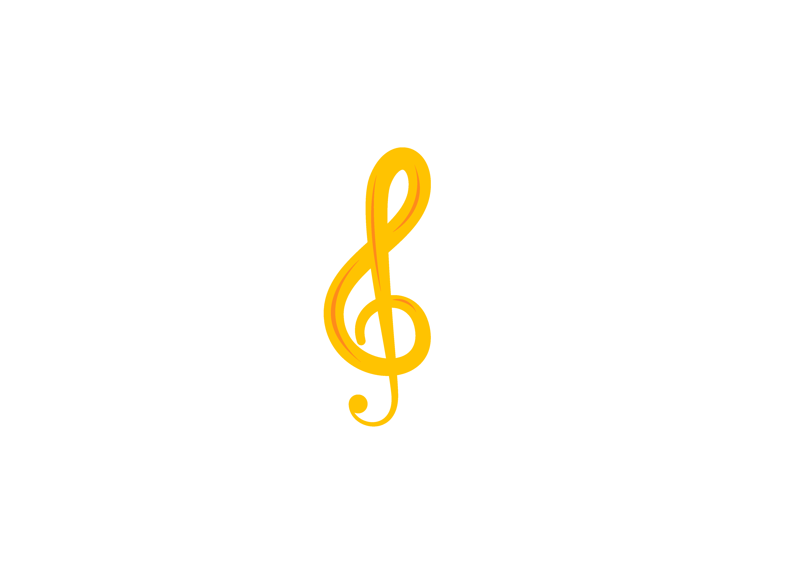
New WorldCuriosity
04
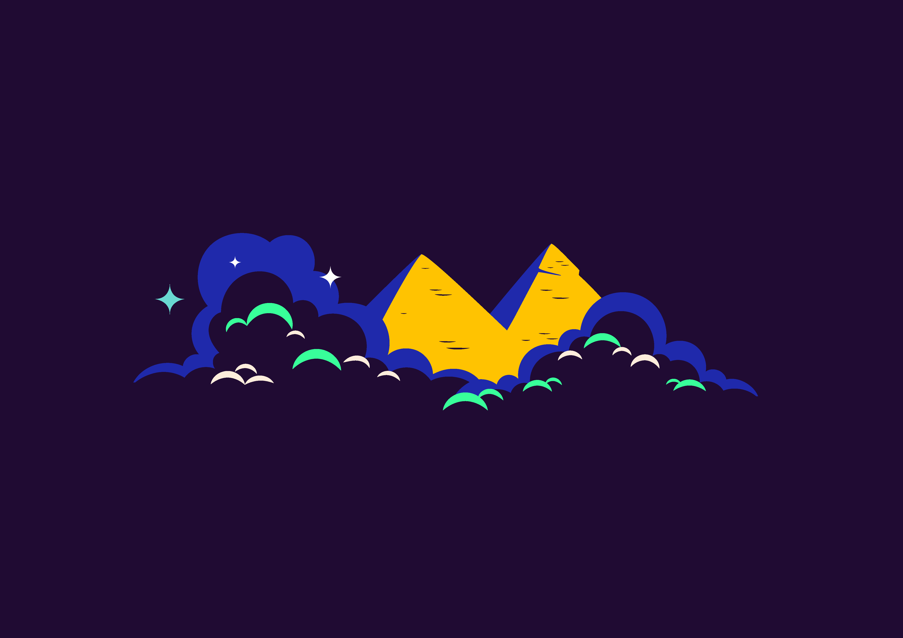
PyramidsOld stories
05
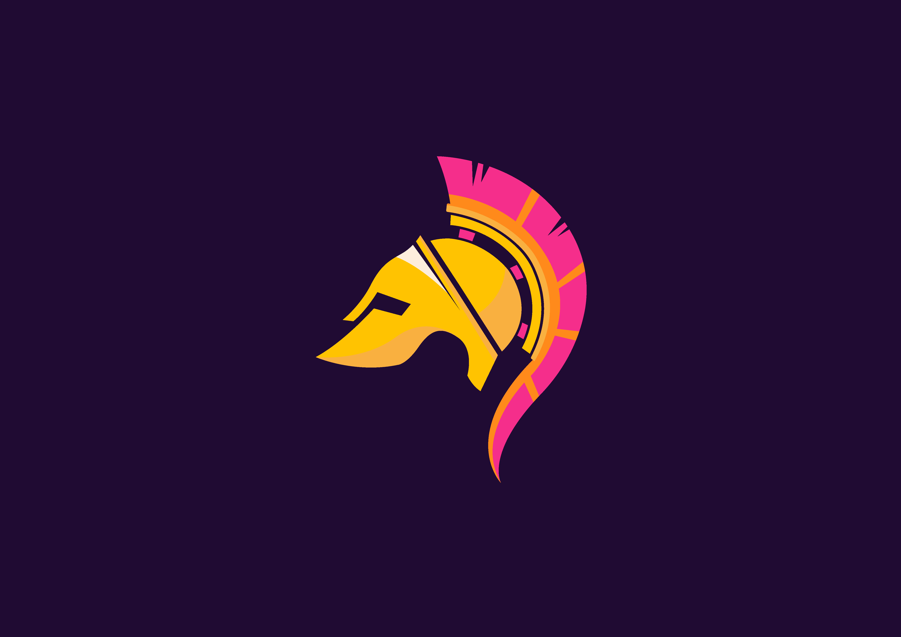
HelmetOld stories
06
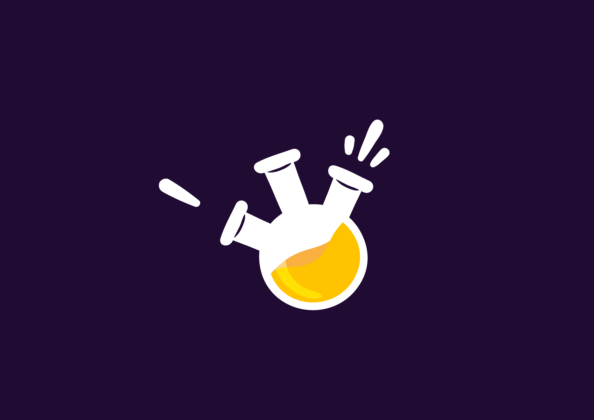
FlaskBold stories · breakthrough
Supporting · tools & subjects
Pair with a core mark — never the hero.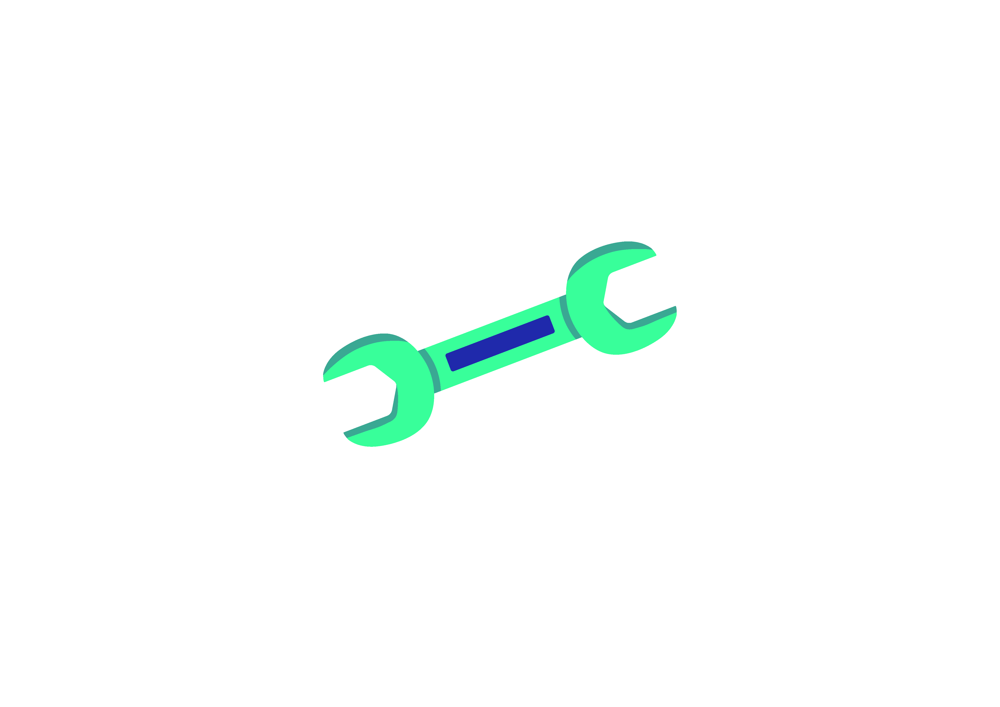
WrenchMake / unbarrier
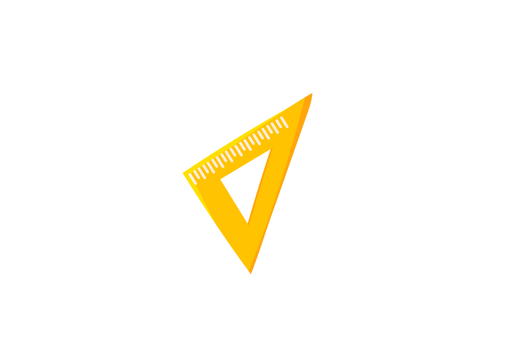
RulerDesign / structure
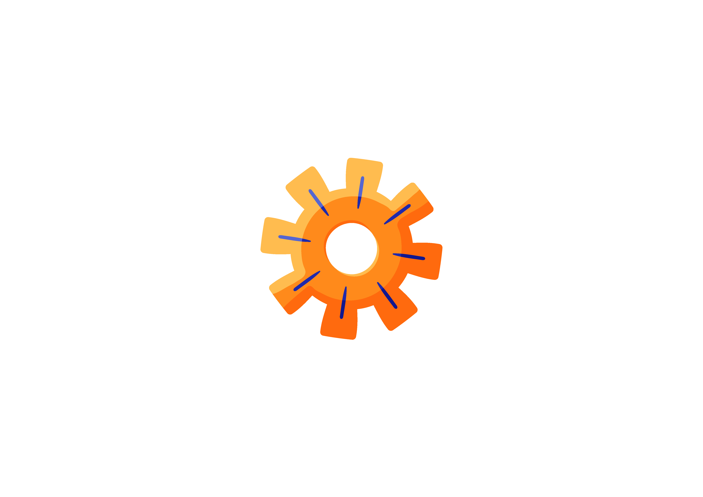
GearEngineering
Parked · off-system
Available on file but kept out of the kit.
×
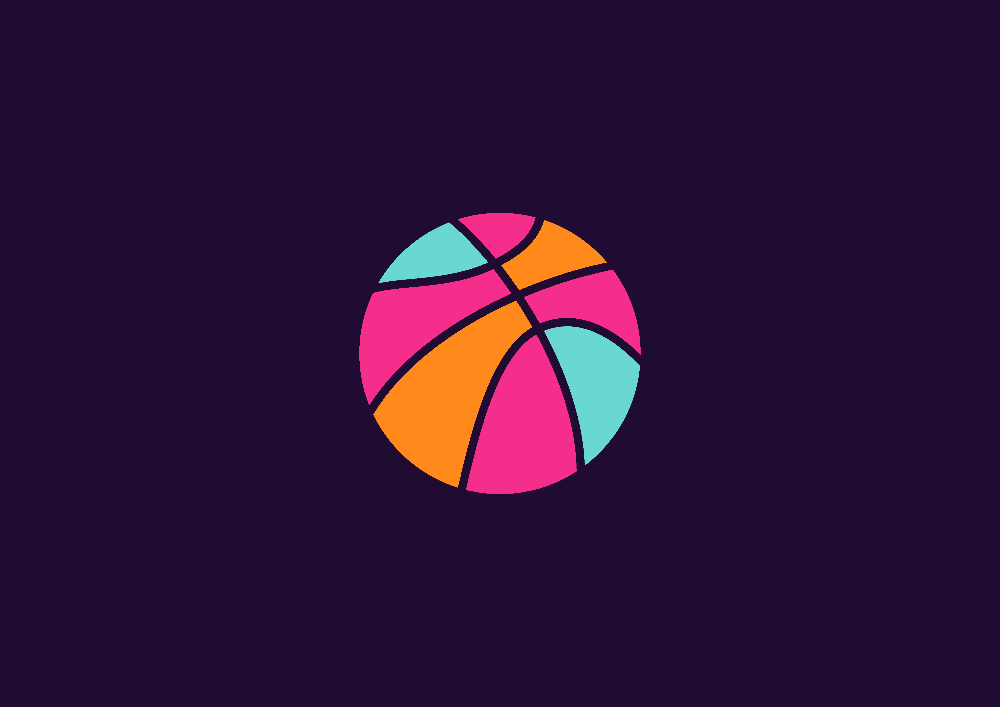
Off-palette
×
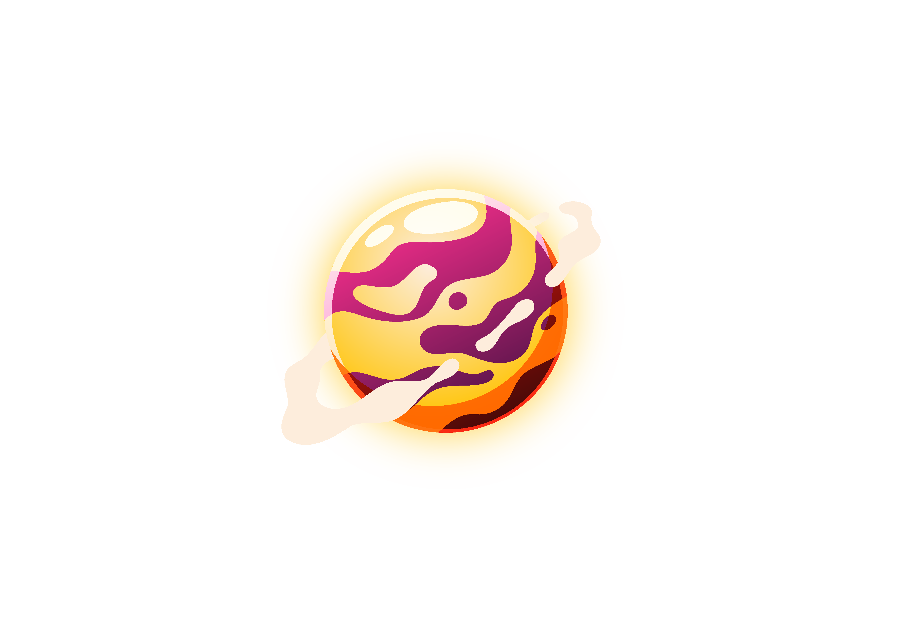
Palette clash
×
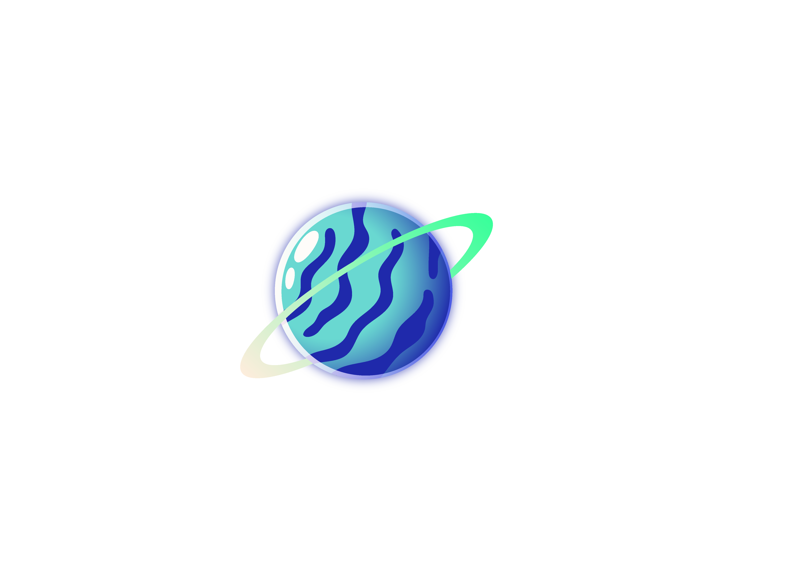
Line style
×
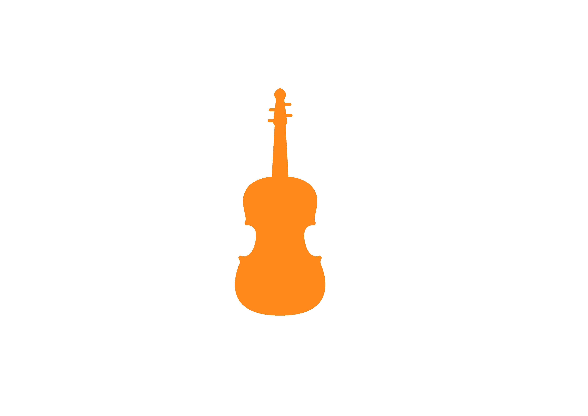
Flat silhouette
×
Fragment
×
Blank file
Rules of thumb. The figure + "bring the joy" wordmark is the signature pairing — use them together whenever possible. For everything else, one core mark per composition; don't stack Pyramids with Helmet with Planet. Supporting tools add specificity (wrench + flask when talking about how we do it). The spring-green wordmark and the green ring on the planet are the only greens in the set — that's what makes them ownable.